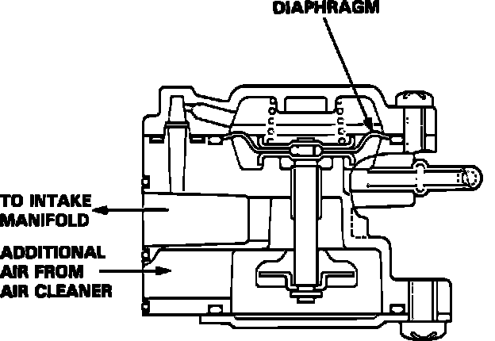

Starting Air Valve: Locations
Air Boost Valve:

1. Disconnect the vacuum hoses from the Air Boost Valve.
2. Remove mounting bolt from valve.
3. Replace the O-ring at base of valve.
4. Reinstall Air Boost Valve mounting bolt.
5. Reconnect the vacuum hoses.